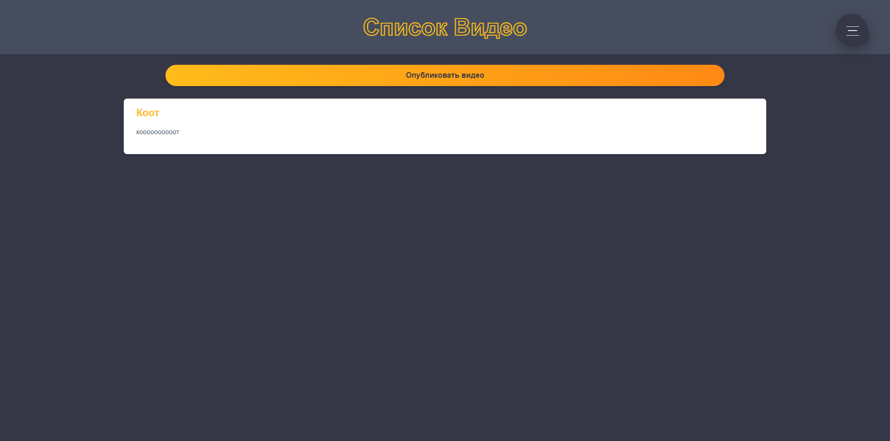

Добро пожаловать в новую социальную сеть!
Все мы стремимся к самовыражению, поэтому в социальной сети
вы сможете загружать свои картинки в профиль
Какая же социальная сеть без общения? Здесь вы сможете
общаться абсолютно с каждым
Одной из особенностей этой социальной сети является
наличие встроенного магазина

Если вы устали на работе и захотите расслабиться и
развлечься, то в социальной сети предусмотрено несколько классических игр

❮
❯
Так же Вы сможете делиться своими новостями, а также
публиковать различные посты со своими наблюдениями